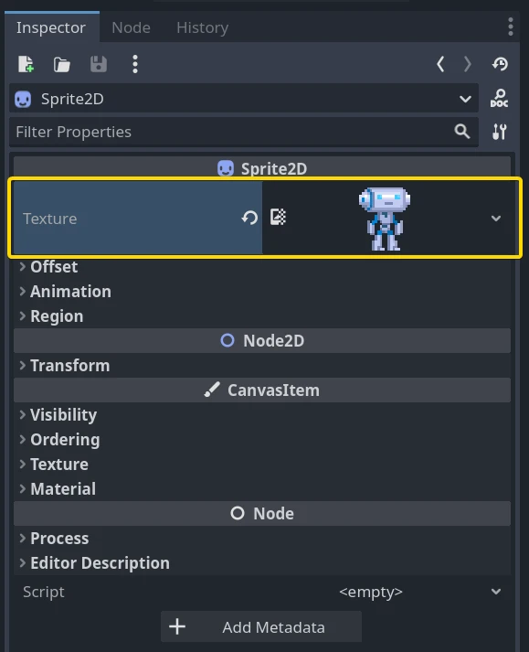
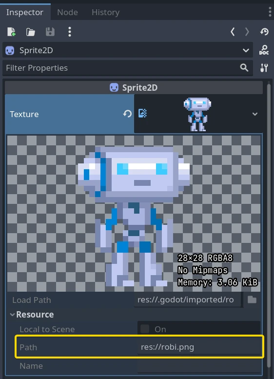

Resources
Nodes and resources
Up to this tutorial, we focused on the Node class in Godot as that's the one you use to code behavior and most of the engine's features rely on it. There is another datatype that is just as important: Resource.
Nodes give you functionality: they draw sprites, 3D models, simulate physics, arrange user interfaces, etc. Resources are data containers. They don't do anything on their own: instead, nodes use the data contained in resources.
Anything Godot saves or loads from disk is a resource. Be it a scene (a .tscn
or a .scn file), an image, a script... Here are some Resource examples:
When the engine loads a resource from disk, it only loads it once. If a copy of that resource is already in memory, trying to load the resource again will return the same copy every time. As resources only contain data, there is no need to duplicate them.
Every object, be it a Node or a Resource, can export properties. There are many types of Properties, like String, integer, Vector2, etc., and any of these types can become a resource. This means that both nodes and resources can contain resources as properties:

External vs built-in
There are two ways to save resources. They can be:
External to a scene, saved on the disk as individual files.
Built-in, saved inside the
.tscnor the.scnfile they're attached to.
To be more specific, here's a Texture2D in a Sprite2D node:

Clicking the resource preview allows us to view the resource's properties.

The path property tells us where the resource comes from. In this case, it comes
from a PNG image called robi.png. When the resource comes from a file like
this, it is an external resource. If you erase the path or this path is empty,
it becomes a built-in resource.
The switch between built-in and external resources happens when you save the
scene. In the example above, if you erase the path "res://robi.png" and
save, Godot will save the image inside the .tscn scene file.
Note
Even if you save a built-in resource, when you instance a scene multiple times, the engine will only load one copy of it.
Loading resources from code
There are two ways to load resources from code. First, you can use the load() function anytime:
func _ready():
# Godot loads the Resource when it reads this very line.
var imported_resource = load("res://robi.png")
$sprite.texture = imported_resource
public override void _Ready()
{
// Godot loads the Resource when it executes this line.
var texture = GD.Load<Texture>("res://Robi.png");
var sprite = GetNode<Sprite2D>("sprite");
sprite.Texture = texture;
}
You can also preload resources. Unlike load, this function will read the
file from disk and load it at compile-time. As a result, you cannot call preload
with a variable path: you need to use a constant string.
func _ready():
# Godot loads the resource at compile-time
var imported_resource = preload("res://robi.png")
get_node("sprite").texture = imported_resource
// 'preload()' is unavailable in C Sharp.
Loading scenes
Scenes are also resources, but there is a catch. Scenes saved to disk are resources of type PackedScene. The scene is packed inside a Resource.
To get an instance of the scene, you have to use the PackedScene.instantiate() method.
func _on_shoot():
var bullet = preload("res://bullet.tscn").instantiate()
add_child(bullet)
private PackedScene _bulletScene = GD.Load<PackedScene>("res://Bullet.tscn");
private void OnShoot()
{
Node bullet = _bulletScene.Instantiate();
AddChild(bullet);
}
This method creates the nodes in the scene's hierarchy, configures them, and returns the root node of the scene. You can then add it as a child of any other node.
The approach has several advantages. As the PackedScene.instantiate() function is fast, you can create new enemies, bullets, effects, etc. without having to load them again from disk each time. Remember that, as always, images, meshes, etc. are all shared between the scene instances.
Freeing resources
When a Resource is no longer in use, it will automatically free itself. Since, in most cases, Resources are contained in Nodes, when you free a node, the engine frees all the resources it owns as well if no other node uses them.
Creating your own resources
Like any Object in Godot, users can also script Resources. Resource scripts inherit the ability to freely translate between object properties and serialized text or binary data (*.tres, *.res). They also inherit the reference-counting memory management from the RefCounted type.
This comes with many distinct advantages over alternative data structures, such as JSON, CSV, or custom TXT files. Users can only import these assets as a Dictionary (JSON) or as a FileAccess to parse. What sets Resources apart is their inheritance of Object, RefCounted, and Resource features:
They can define constants, so constants from other data fields or objects are not needed.
They can define methods, including setter/getter methods for properties. This allows for abstraction and encapsulation of the underlying data. If the Resource script's structure needs to change, the game using the Resource need not also change.
They can define signals, so Resources can trigger responses to changes in the data they manage.
They have defined properties, so users know 100% that their data will exist.
Resource auto-serialization and deserialization is a built-in Godot Engine feature. Users do not need to implement custom logic to import/export a resource file's data.
Resources can even serialize sub-Resources recursively, meaning users can design even more sophisticated data structures.
Users can save Resources as version-control-friendly text files (*.tres). Upon exporting a game, Godot serializes resource files as binary files (*.res) for increased speed and compression.
Godot Engine's Inspector renders and edits Resource files out-of-the-box. As such, users often do not need to implement custom logic to visualize or edit their data. To do so, double-click the resource file in the FileSystem dock or click the folder icon in the Inspector and open the file in the dialog.
They can extend other resource types besides just the base Resource.
Godot makes it easy to create custom Resources in the Inspector.
Create a new Resource object in the Inspector. This can even be a type that derives Resource, so long as your script is extending that type.
Set the
scriptproperty in the Inspector to be your script.
The Inspector will now display your Resource script's custom properties. If one edits those values and saves the resource, the Inspector serializes the custom properties too! To save a resource from the Inspector, click the save icon at the top of the Inspector, and select "Save" or "Save As...".
If the script's language supports script classes, then it streamlines the process. Defining a name for your script alone will add it to the Inspector's creation dialog. This will auto-add your script to the Resource object you create.
Let's see some examples.
Create a Resource and name it bot_stats.
It should appear in your file tab with the full name bot_stats.tres.
Without a script, it's useless, so let's add some data and logic!
Attach a script to it named bot_stats.gd (or just create a new script, and then drag it to it).
Note
To make the new resource class appear in the Create Resource GUI you need to provide a class name for GDScript, or use the [GlobalClass] attribute in C#.
class_name BotStats
extends Resource
@export var health: int
@export var sub_resource: Resource
@export var strings: PackedStringArray
# Make sure that every parameter has a default value.
# Otherwise, there will be problems with creating and editing
# your resource via the inspector.
func _init(p_health = 0, p_sub_resource = null, p_strings = []):
health = p_health
sub_resource = p_sub_resource
strings = p_strings
// BotStats.cs
using Godot;
namespace ExampleProject
{
[GlobalClass]
public partial class BotStats : Resource
{
[Export]
public int Health { get; set; }
[Export]
public Resource SubResource { get; set; }
[Export]
public string[] Strings { get; set; }
// Make sure you provide a parameterless constructor.
// In C#, a parameterless constructor is different from a
// constructor with all default values.
// Without a parameterless constructor, Godot will have problems
// creating and editing your resource via the inspector.
public BotStats() : this(0, null, null) {}
public BotStats(int health, Resource subResource, string[] strings)
{
Health = health;
SubResource = subResource;
Strings = strings ?? System.Array.Empty<string>();
}
}
}
Now, create a CharacterBody3D, name it Bot, and add the following script to it:
extends CharacterBody3D
@export var stats: Resource
func _ready():
# Uses an implicit, duck-typed interface for any 'health'-compatible resources.
if stats:
stats.health = 10
print(stats.health)
# Prints "10"
// Bot.cs
using Godot;
namespace ExampleProject
{
public partial class Bot : CharacterBody3D
{
[Export]
public Resource Stats;
public override void _Ready()
{
if (Stats is BotStats botStats)
{
GD.Print(botStats.Health); // Prints '10'.
}
}
}
}
Now, select the CharacterBody3D node which we named bot, and drag&drop the bot_stats.tres resource onto the Inspector. It should print 10! Obviously, this setup can be used for more advanced features than this, but as long you really understand how it all worked, you should figure out everything else related to Resources.
Note
Resource scripts are similar to Unity's ScriptableObjects. The Inspector provides built-in support for custom resources. If desired though, users can even design their own Control-based tool scripts and combine them with an EditorPlugin to create custom visualizations and editors for their data.
Unreal Engine's DataTables and CurveTables are also easy to recreate with Resource scripts. DataTables are a String mapped to a custom struct, similar to a Dictionary mapping a String to a secondary custom Resource script.
# bot_stats_table.gd
extends Resource
const BotStats = preload("bot_stats.gd")
var data = {
"GodotBot": BotStats.new(10), # Creates instance with 10 health.
"DifferentBot": BotStats.new(20) # A different one with 20 health.
}
func _init():
print(data)
using Godot;
[GlobalClass]
public partial class BotStatsTable : Resource
{
private Godot.Collections.Dictionary<string, BotStats> _stats = new Godot.Collections.Dictionary<string, BotStats>();
public BotStatsTable()
{
_stats["GodotBot"] = new BotStats(10); // Creates instance with 10 health.
_stats["DifferentBot"] = new BotStats(20); // A different one with 20 health.
GD.Print(_stats);
}
}
Instead of inlining the Dictionary values, one could also, alternatively:
Import a table of values from a spreadsheet and generate these key-value pairs.
Design a visualization within the editor and create a plugin that adds it to the Inspector when you open these types of Resources.
CurveTables are the same thing, except mapped to an Array of float values or a Curve/Curve2D resource object.
Warning
Beware that resource files (*.tres/*.res) will store the path of the script
they use in the file. When loaded, they will fetch and load this script as an
extension of their type. This means that trying to assign an
inner class of a script (i.e. using the class keyword in GDScript) won't
work. Godot will not serialize the custom properties on the script inner class properly.
In the example below, Godot would load the Node script, see that it doesn't
extend Resource, and then determine that the script failed to load for the
Resource object since the types are incompatible.
extends Node
class MyResource:
extends Resource
@export var value = 5
func _ready():
var my_res = MyResource.new()
# This will NOT serialize the 'value' property.
ResourceSaver.save(my_res, "res://my_res.tres")
using Godot;
public partial class MyNode : Node
{
[GlobalClass]
public partial class MyResource : Resource
{
[Export]
public int Value { get; set; } = 5;
}
public override void _Ready()
{
var res = new MyResource();
// This will NOT serialize the 'Value' property.
ResourceSaver.Save(res, "res://MyRes.tres");
}
}